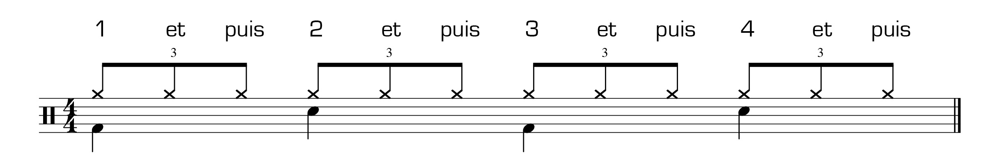
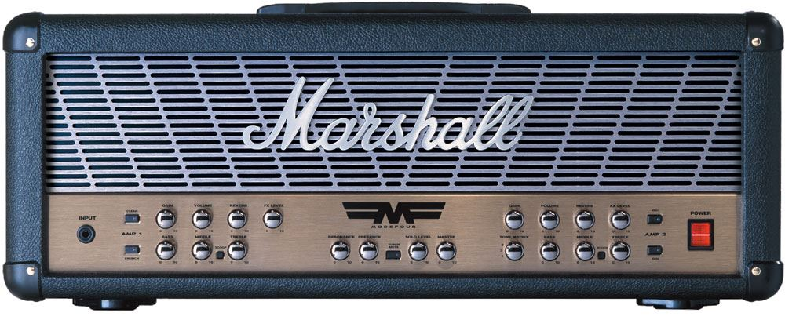

Approchez, approchez, et venez découvrir...
LE MÉTAL !
La naissance d'une légende !
Le métal est né du Rock'n'Roll, du Blues et de la pop anglaise des années 1970. Le premier groupe de métal est souvent désigné comme étant
Black Sabbath qui écrit son premier album éponyme en 1970.
Le style métal s'inspire d'abords des partitions simples du
Blues pour les parties rythmiques. En effet ces dernières sont
soutenues, répétées et contiennent peu d'accords.

Pour ce qui est des sonorités, le métal s'inspire de la saturation
des guitares Rock. Cependant, la plupart des instruments utilisant
des amplificateurs n'hésite pas à augmenter la saturation au maximum
afin de donner un son plus distordant, plus agressif à leur musique.

Enfin, pour les parties mélodiques des morceaux, les musiciens de métal
s'inspirent des compositeurs classiques. Ils séparent leur morceaux en
deux grandes parties (qui peuvent être répétées) : la partie rythmique
et la partie soliste. Pour cette dernière partie, la plupart des
instruments jouent le même rythme en boucle pendant qu'un ou plusieurs
musiciens entament un air aigu et différent.
Les Premiers-Nés !

Comme expliqué précédemment, Black Sabbath est le premier groupe
de métal au monde. C'est après avoir assister à la diffusion d'un film
d'horreur, qu'ils eurent l'idée de créer une musique effrayante. Ainsi
naquis le Heavy Metal. Cette sensation d'épouvante se retrouve en effet
clairement dans les morceaux de leur premier album. Qu'il s'agisse
des paroles, l'angoisse d'un individu paranoiaque, l'invitation à
suivre le diable, la composition, l'utilisation du triton dit l'accord
du diable ou encore dans les sonorités avec des rythmes lents ou au
contraires rapides et frénétiques.
Quelques classiques à écouter:
Afin de mieux cerner ce style de métal, nous vous invitons à découvrir les groupes suivants avec leurs chansons:
- "Paranoid" de Black Sabbath:
- "Run to the hills" de Iron Maiden:
- "Breakin' the Law" de Judas Priest:
Festivals
METAAAAAAAAAL !Office du tourisme d'Indre et Loire
À voir / À faire
Le clos LucéLes grottes mousseuses de Savonnières